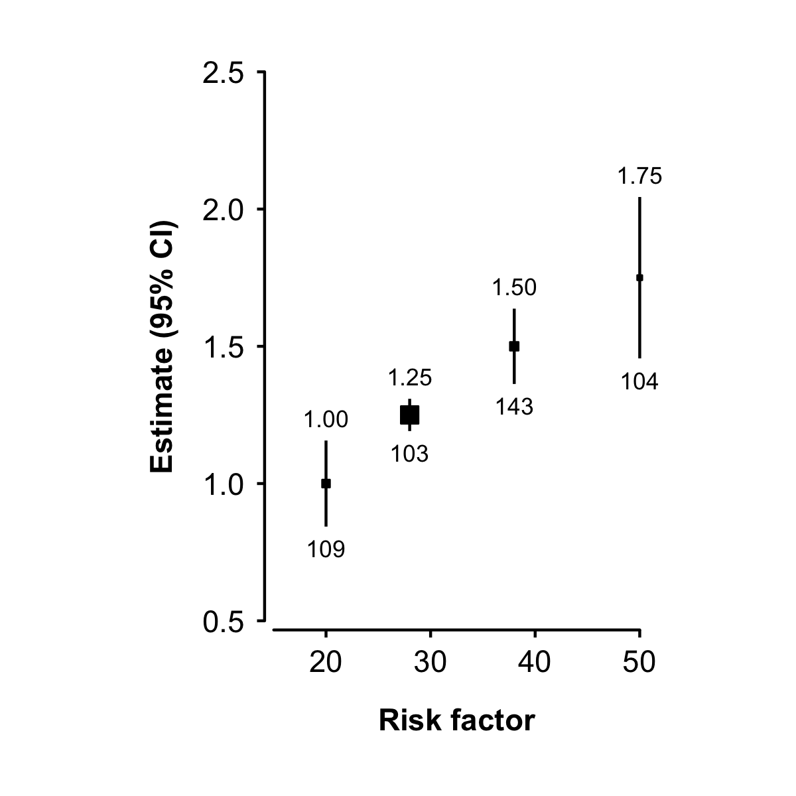

ckbplotr provides functions to help create and style plots in R. It is being developed by, and primarily for, China Kadoorie Biobank researchers.
This package is under development. If you find an error or bug or have a suggestion for improvement please create an issue on GitHub or contact the author at neil.wright@ndph.ox.ac.uk or @NeilStats.
It can be used to: create plots of estimates and CIs against risk factor levels… 
…create forest plots… 
…and convert other ggplots to CKB style. 
Installation
Directly from github
The latest version of ckbplotr can be installed directly from github using the remotes package.
install.packages('remotes')
remotes::install_github('neilstats/ckbplotr')If you get an error that reads “Error: Failed to install ‘unknown package’ from GitHub: HTTP error 404. No commit found for the ref master” then make sure to update to the latest version of the remotes package, or try remotes::install_github('neilstats/ckbplotr@main').
If you get an error that reads “Error: (converted from warning) package ‘ggplot2’ was built under R version …” you can avoid this by first running Sys.setenv("R_REMOTES_NO_ERRORS_FROM_WARNINGS" = "true"). (This is a known issue with the remotes package.)
Or from source package
ckbplotr can also be installed from its source package. The R packages ggplot2, magrittr, readr, tibble, dplyr, purrr, rlang, and ggtext must first be installed.
# The easiest way is to install the whole tidyverse and ggtext:
install.packages("tidyverse", "ggtext")
# # Or install just these packages:
# install.packages(c("ggplot2", "readr", "dplyr", "purrr", "ggtext"))Then ckbplotr can be installed from its source package using the code:
install.packages("ckbplotr.tar.gz", repos = NULL, type = "source")Or, in RStudio, open the “Tools” menu and select “Install Packages…”. In the “Install from…” box select “Package Archive File”, and in the “Package archive” box browse to the ckbplotr.tar.gz file.
The source package for the latest release version is available here.
Get started
Go to “Get started with ckbplotr” to see how to use the make_shape_plot(), make_forest_plot(), and plot_like_ckb() functions.
ggplot2 code
The make_shape_plot() and make_forest_plot() functions return both a plot and the ggplot2 code used to create the plot. In RStudio the ggplot2 code used to create the plot will be shown in the Viewer pane (with syntax highlighting if the highlights package is installed).